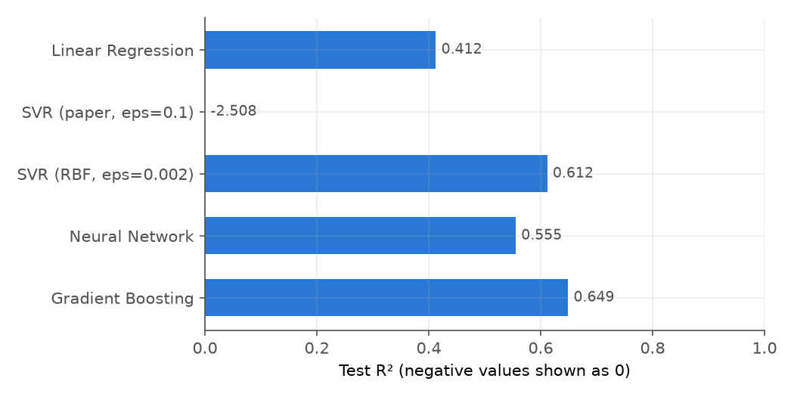
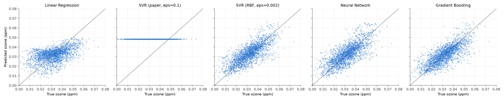
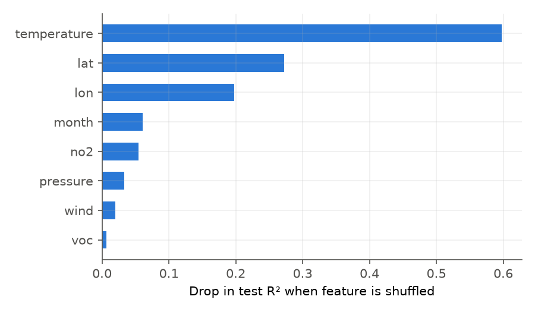

Replicating "CS229 Autumn 2019: Predicting Tropospheric Ozone" (M. Sutton)
UE24CS352A Machine Learning · Mini-Project
download.py → build_dataset.py → train.py → evaluate.py → predict.py
EPA zips clean + join 5 models plots + demo
data/ozone.csv metrics.csv importance
| Model | Paper | Ours |
|---|---|---|
| Linear Regression | 0.467 | 0.412 |
| SVR (ε=0.1) | −2.363 | −2.508 |
| SVR (ε=0.002) | – | 0.612 |
| Neural Network | 0.654 | 0.555 |
| Gradient Boosting | – | 0.649 |


The paper-setting SVR predicts a constant (flat line), which is why its R2 is negative.

python predict.py --temperature 85 --pressure 1010 --wind 4 --month 7 \
--lat 34.05 --lon -118.24 --no2 15 --voc 60
Thank you. Questions?